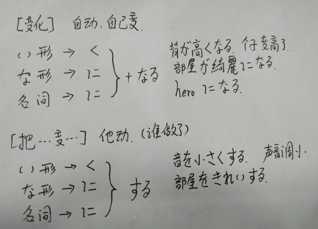

地方 + へ ：表示目的地
时间/地点 + から ：表示 从 时间/地点 开始
工具 + で ：表示使用工具、方法、手段
时/分/月份/星期/几号 + に + 动词 ：在某个时间做
不包括: 去年、上周、上个月、昨天
物体 + を ＋ 动词 ：对物体施加动作;
eg（ご飯を食べます: 吃饭）
场所 + で ：表示动作进行的地方;
eg;(私は部屋で日本語を勉強します)
名词 A + か ＋ 名词B ：表示 A 或者 B （早上吃粥或者面包）
东西 は 地点 に あります/ います。 东西存在于地点
地点 に 东西 が ある/いる 。 某地点有东西。
eg:（私の中に君がいる）
A は Bに 物品をあげる A 给了 B 物品。（注意: B不能是 “我”）
A は Ｂに 物品 を もらう。 A从B那里得到了物品。（注意: B不能是“我”）
人 + に <==> 人 ＋ から; 但是 地点/机构 + から 就不能用に来替换
眺()め 一般用于来形容站在高处看到的视野开阔的景色
形容词的否定式 （い ＝> くない）
熱い => 熱くない （三个音节的，声调前移一位）
かわいい ＝> かわいくない
特例: いい => よくない
形容词的过去式 （い ＝> かった）
楽しい => 楽しかった
面白い => 面白かった
特别的用法:
①类adj 是 ~い
②类adj 是 **(汉字) | 外来语 ≈ 名词
名词 + の + 名词
いろいろ 副词, ②类adj
①类adj 可愛い猫。
②类adj 綺麗な猫
n + n 私の猫
eg: 料理が上手
| 主 | 宾 | 谓 |
|---|---|---|
| 私は | 窓を | 閉める |
| 私は | 疲れた |
>我累了。 我自己感觉到累了。 自动词。
> 我关窗户。我作用于窗户。他动词。
AやＢやＣなど A呀，B呀，C呀等
~ から 从~来；因为~~~~
私はアニメが好きですから, 日本語を勉強します.
我因为喜欢动漫，所以才学习日语。
①类 adj いい ですから 【正式】
②类adj 好き ですから 【正式】
③类adj 好き だから 【随意】
近くのホテル で 友達の写真展があります。
附近宾馆有朋友的摄影展。
どうですか 的敬体 いかがですか
比较句
AはＢより adj です。
A比B adj 样。
ＢよりAのほうが adj です.
比起B来A这一方要adj样。
AはＢほど (adj + not ) です。
A不如B adj 样。
AとＢとどちらが adj ですか。
A和B那个更 adj 样。
collection の中で which が一番 adj です。
在 【集合】中 which 最 adj 样。 which 用哪个？
- ①どれ 具体的一堆东西中，比如，这堆玩具中
- ②何 抽象的，比如 狗，运动
ss が adj . ss ∈ {宾语， 补语 ... }
ss は adj => 表示话题强调
eg:お酒は好きです。 酒呢最喜欢了。
(大) は (小) が adj
eg:象（ぞう） は 鼻 が長いです. 大象的鼻子很长。
~ ですが～～～～～ ( 说话不点穿，你懂得)
注意:
一時間 或者 1時間 ：表示一个小时
1時 : 表示 1点钟
二か月(げつ) 两个月
一週間(いちしゅうかん) 一周时间
语法: 量词 △ 放置的位置
助词 が ｜ を ＋ △ + 动词 あります ｜ あげます
eg: 本が三冊あります
表示频率的用词:
eg: 一週間に二回
一か月に5回ぐらい 一个月五次左右
週に1回 ：每周一次
年に二回：每年两次
月(つき)に三回：每个月三次
eg: 李さんは一週間に二回プールへ行きます。
句型:
地点 + へ + [名称 + 助词] + 动词ます型词干 + に + 行きます.
去[地点] 做[助&&名]
eg: 私は図書館へ日本語を勉強しに行きます。
我去图书馆学习日语。
~する ; ~~ 一般是{① 动词性的名词: 勉强 ②外来语}
もう: 现在就要....
句型:
动词用法 A 东西 を 他动词
eg: ご飯を食べる
B 地点を移动性的动词 ；を表示经过/离开 的场所
eg: 公園を散歩(さんぽ)する； 在公园散步
动词て形的用法
昨日デパートへ行って，買い物しました。昨天去了商场买了东西. (去，然后，买)
このアニメを見ってから，寝ます。
この荷物を中国へ送ってください。
请把这件货物送到中国
辨析:
無理：自己能力范围内做不到的事情。
ダメ：主观意愿上不行！
AにB 表示B贴在，附着在A上，有一个着落点
AをB 表示B强烈作用一个动作在A上
暖かい ：一般用来形容天气暖喝
温かい ：一般用来形容水很温暖
地点に ：强调方向
地点へ ：强调目的地
句型:
〜てください ：请~~
〜て代表一个动作的て形
可以用〜て。不过结尾语气要上扬
表示现在正在做什么。(ing)
〜ている。
〜ています。
口语中。
〜てる
〜てます
いま生放送を見ています。
现在在看直播。
〜でもいいですか。 〜可以吗？
ここに座ってもいいですか。可以坐这里吗？
回答：
| 同意① | いいですよ。 升调， 可以。 |
|---|---|
| 同意② | かまいません。没关系 |
| 不同意① | だめ！ 不行！ |
| 不同意② | 〜てはいけません。 禁止〜 |
〜てはいけません
ここに座ってはいけません。
学校で漫画を読んではいけません。
在学校不能看漫画。
〜てはいけません
〜ではいけません
口语化：
〜ちゃだめ
〜じゃだめ
读音注意:
形 （かたち）
革（かわ）
間違い(这个是名词！！！ 表示错误)
指輪（ゆびわ）
天井（てんじょう 天棚，天花板）
自宅警備員（じたく けいびいん） 暗指宅人
辨析:
足 表示脚
脚 表示腿
横： 方位感较强， 左右
側: 感情上的陪伴
隣: 周围
ますぐ: 笔直地去
すぐ ：马上，现在
まだ: 还没
また: 再， again
动词：
①持つ
＊＊を持っています
①住む
〇知る
＊＊をしっていますか
〇結婚する ②直す
④片付ける 收拾，整理
〇練習する
〇安心する
句型：
adj + adj 形容词连接
名词并列
n で n
私は学生で会社員です
我是学生、公司职员
形容词的就近原则
親切で優しい人
優しくて親切な人
〜が，〜
虽然~， 但是~
二か月日本語を勉強しましたがまだあまりできません
虽然学历两个月的日语，但是什么也做不了
買い物に行く
昼ご飯を食べに行く
社長に連絡する ：联系社长
また、連絡しますね。 那，再联系(口语)
もの が 欲しい 想要もの
动(去ます主干) + たい 想做~
君に会いたい. 想见你
(v去ます, n 都可以) 〜に行く
疑问词 + でも〜 全部肯定，什么都~~~
疑问词 + も + 否定词 全部否定, 什么都不
何でもわかる
何もわからない
おっと 丈夫
空気（くうき） 空气，氛围
息子(むすこ)さん 别人家的儿子
医者(いしゃ) 医生(职业)
お医者さん 医生(尊称)
おどがする 东西的响声
声(こえ) 声带发出的响声
声が綺麗 声音好听
KY => 空気読め (冷场王)
病気になる 生病了
ドアが開く 自动词， 门自己开了
私はドアを開ける 他动词 我开门
〜にする 决定，选择
これにする 选这个
A が B に 似合う A和B很合适

触らないでくたさい。 请不要摸
～ ない ＋ でくたさい。 请不要 ....
喉が渇きました 口渴了
手が滑る 手滑了
急救车を呼ぶ 叫警察， 叫救护车
某人に物を返す 还东西给某人
家事をて伝う 帮忙做家务。 ひっこしをて伝う 帮忙搬家
荷物を運ぶ 搬运行李
財布をなくす
大事なものをなくしました。
～を落とす。 スビードを落とす 减速。
男を落とす 掳落那个男的。
好きな人を落とす 让他爱上我
物を場所に置く
お金を払う 付钱 ① 立(た)つ 站，立
廊下に立つ 站在走廊下
携帯を忘れる 忘带手机
慌てるな 不要方。
ごみを捨てる 扔垃圾
本当 副词；
早く 副词；
私の名前を呼ばないでくたさい 不要叫我的名字
～なければなりません。 不得不~~~
～な 指代动词的ない形去掉い eg:行きない => 行かな
今日は早く帰らなければなりません。 今天不得不早点回去。
～なくてもいい。 不需要，不必要做......
今日は休みですから、会社に行かなくてもいいですよ。
今天是休息日，没必要去公司。
彼女がいなくてもいい。 没有女朋友也可以。
～には...... 这里的 は 表示强调， 只有 に 才行， を和が都不行
海岸(かいがん) 海岸
釣(つ)り 钓鱼(n)
書道(しょどう) 书法
ギター 吉他
空(す)く 饿， 空
編(あ)む 编织；
編むもの 编织物； 洗濯物 洗好的衣服
0 弾(ひ)く 弹 **乐器
0 登(のぼ)る 登，上
山に登る 登山；
集(あつ)める 收集；
浴(あ)びる 淋，浇
ごちそうする 请吃大餐
帰国(きこく)する 回国
洗濯機(せんたくき) 洗衣机
特(とく)に 特别 【副】
名词 ----------- 名词です
他动词 --------- 宾语を动词ます
形容词 --------- 主语は形容词です
～に趣味がある 对什么感兴趣
人数 + で 以~（人） 做
动 + こと 把某个行为，变成名词，用来放在名词的位置
私の趣味は 动 + こと です
私の趣味は 本を読んむことです。 我的爱好是读书
本を読んむことが好きです。 我喜欢读书。
～ことができる。 能做 ...
～动る ＋ 前に ～
食事をする前にてをあらってください。 用餐前请洗手.
从句 (が) ， 主语 (は)
彼が来る前に、逃げてください。 请在他来之前逃走。
疑问词 + か
どこへ行く ？ 你去哪里 ？（强调去哪里）
どこかへ行き？你要去哪里？（强调要去）
誰がいる？ 谁在 ？ （强调 谁）
誰かがいる？ 谁在 ？ （强调 在）
早く寝たほうがいいですよ。 早点睡觉比较好哦。
动词(ます词干) + ましょうか 提议，征求意见
行きましょうか。 走吧
都合(つごう) がいい 时间上方便
都合が悪い 时间上不方便
比如要问你去滑雪，会问
都合はどうですか 方不方便去
比如打游戏很科比，可以这么说
都合のいい事ばかり
予定(よてい) 预定，
予定がある 有安排了，有约了
火事(かじ) 火灾
家事(かじ) 家务事
~で火事がある 在~发生了火灾
嬉しい 突然发生的事，导致的开心， happy
楽しい 长时间的过程，享受 enjoy
今日は楽しかった，ありかとう 今天玩得很开心，谢谢。
简体可以省略を， 但 で に 不可以省略
n + だ + けど 动 + けど
简体
敬体
关系亲密程度, 普通 ------------> 亲近
姓+さん < 名+さん < 姓 < 名
促音 + て 表示传闻
いつもの 经常的，老样子的，
いつもの話し方じゃありませんでしたから。
因为用的不是平常的说话方式
気が重い 心情沉重 重い女 让你觉得沉重的女人(心里沉重)
軽い男 轻浮的男人
あんまりだよ！ 过分了啊！
私以外，是全员恶女。 除了我，全是恶女人。
去ます的形 + 方 => ~ 的做法
話し方 说法
使い方 用法
です、ます 敬体形， 同级别之间的尊敬
~だって 听说是
(しゅうまつ)週末いつも何をしますか 周末一般做些什么呢
味はどうですか 味道怎么样。
味はいかがですか 味道怎么样（敬体）
船で通勤してます 坐船上班
営業時間(えいぎょうじかん)
生地(きじ) 布料
記事(きじ) 新闻，报道
地味(じみ) 土气的，平凡的
違う 不同，不一样
込(こ)む 拥挤，混杂(的场面)
決まる (自) ~决定下来了
仕事がなかなか決まらない 工作怎么也定不下来
決まった 做到了。 比如，进球了。
知らせる 通知，告诉
冬休みのおしらせ 寒假通知(名称)
~を 誰 に 知らせる 把~事情通知给谁
運動会が中止になったことを クラス の皆さんに知らせる
把运动会中止这件事通知同班同学
確かめる 弄清，确认
もう一回確かめます 再确认一次
濃い顔 轮廓深的面部(像外国人那种)
多分くると思います
大概来了吧
动词: [A たり，B たり] する 列举行为，有时候A，有时候B (A, B 是动词的ます型词干)
adj: 高ったり、低ったり 忽高忽低， 有时候A， 有时候B， (A,B是adj)
名词 | 二类adj(な的那种) 葉子先生だったり、秋子先生だったり 有时候是叶子老师，有时候是秋子老师.
记得加 だ
私は週末いつも日本の番組を見たり，友達遊んでだりします。
我周末一直都是看日本动漫啊，和朋友玩啊这些。
我忘了 [你是谁]
[あなたは誰] か(を) 忘れました. (中间要加か， 中括号中必须是简体！)
请告诉我 [东西在哪里]
[物はどこにある]か 教えてください。(中间要加か， 中括号中必须是简体！)
彼はどこに行ったかわかりません。 我不知道他去了哪里。
A か A ないか わかりません。 不知道 A 还是 不A. (A可以是动词，可以是形容词, 来る，可愛い)
彼は来るか来ないか わかりません。 我不知道他来不来。
简化： AかAないか ＝> Aかどうか
彼は来るかどうかわかりません。 我不知道他来不来。
季節によります 根据季节的不同而不同
地区によって違います。 根据地区的不同而不同
人によって違います。 因人而异。
この間 前几天
運命の人を探す 寻找命中注定的人
思う 简单想一下
考える 认真思考
~と言う 强调内容，说
~と話す 强调这是谈话
止(や)める 停止
止(や)める 辞职
決める (他) ~を決める 决定~
決まる (自) ~が決まる ~定下来了
やっと 千辛万苦后，终于~
とうとう 终于到了~(的时候)，终于得到了~(的结果)
必ず 这两个用法相似, 一定~样
きっと
绝对に 100%
简单句 と 思います 我想~，我觉得~
简单句(他人) と 思っています 他想~,他觉得~
* 誰 は 简单句 と 言う いまして 。 谁说要去~
A は B に 简单句 と 言いました。 A向B说要 ~
注意： 转述时
と言いました 强调说过了
と言っています 强调说话的内容
如果简单句使用了 名词 或者 二类动词， 需要加上 だ
明日はいい天気だと思います。 我觉得明天是个好天气。